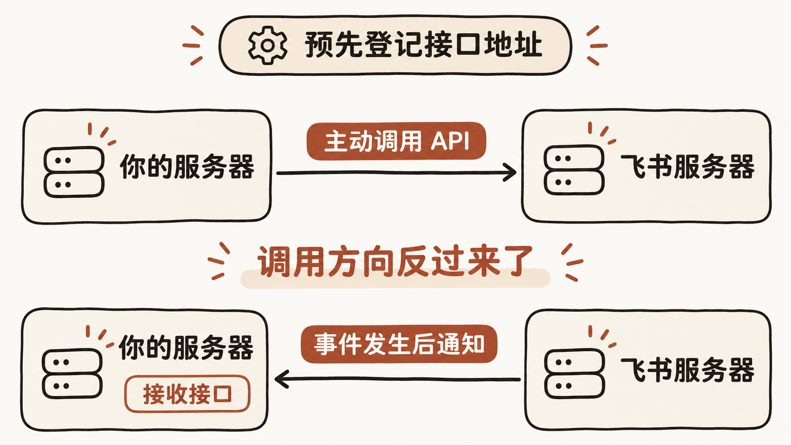
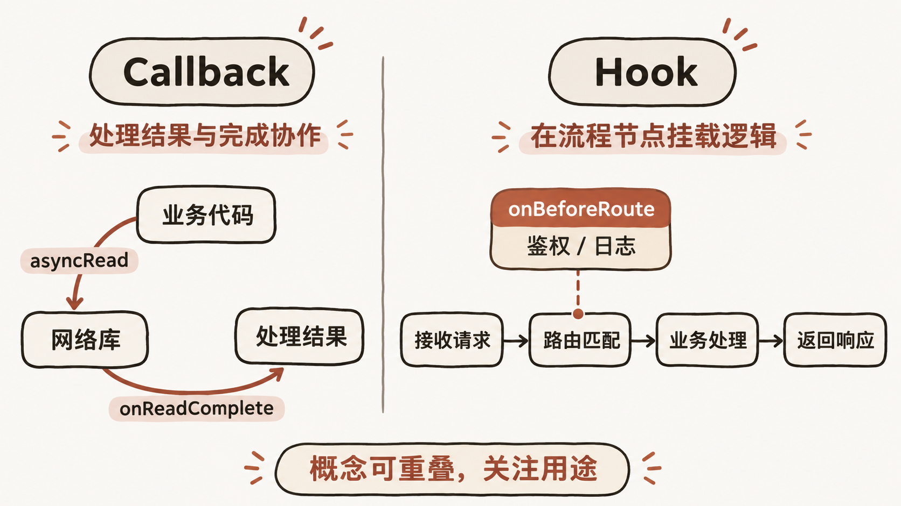
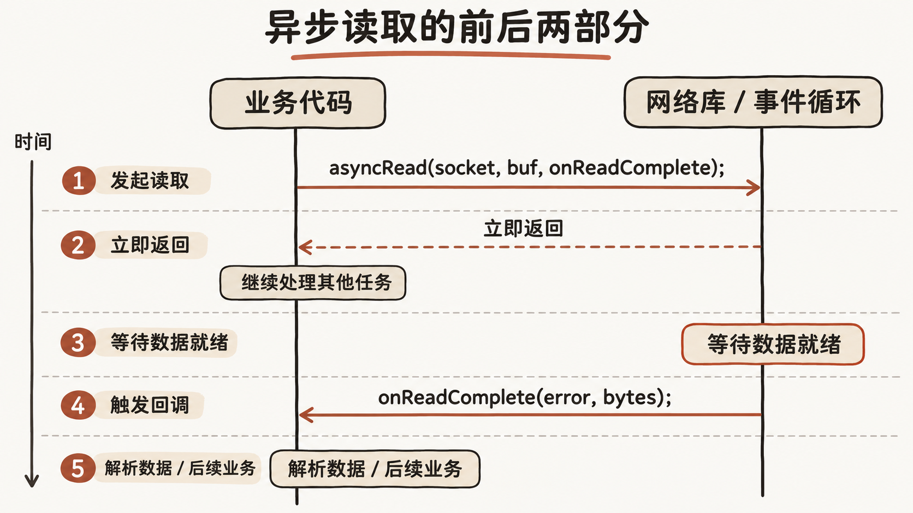
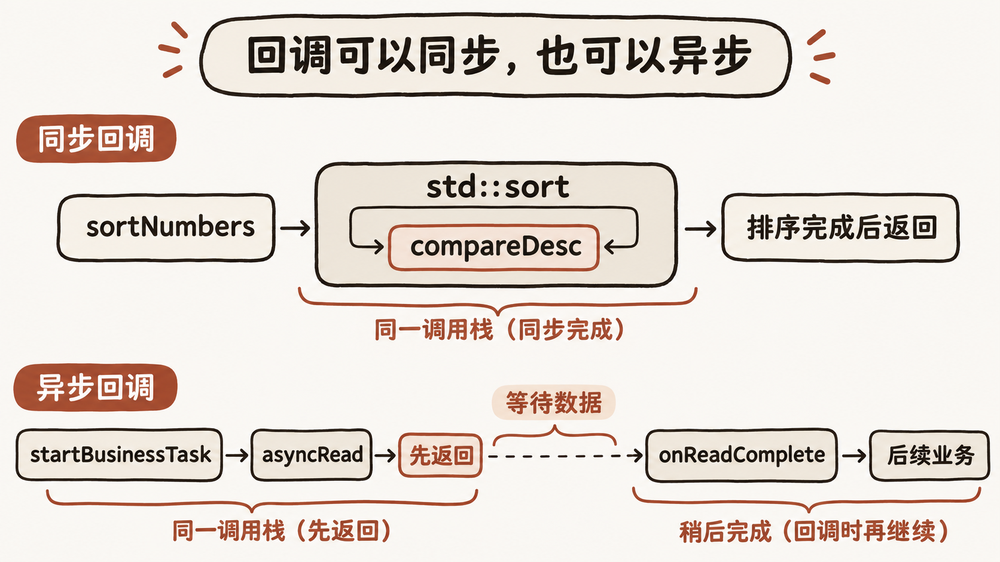
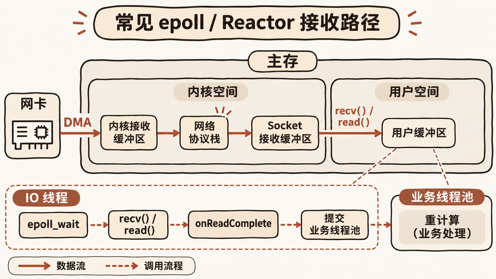

理解回调 从调用方向到异步业务与 IO 线程
配置飞书机器人时，会遇到“事件”和“回调”；使用网络库时，又会看到回调函数、异步读取、IO 线程；再往下看，还有 Hook、线程池和协程。这些词经常一起出现，容易让人记住写法，却说不清究竟是谁在调用谁。
我们先把接口地址或函数交给对方。对方遇到约定的事件，或执行到某个步骤时，再调用它。至于这次调用是否异步、业务逻辑什么时候执行，要看具体实现。
回调中的调用方向
“回调”（Callback）难理解，主要是因为中文翻译把动作方向弄模糊了，而且飞书的相关配置还把原本统称为“回调”的机制，在业务上强行拆成了“事件”和“回调”两个并列的概念。
要建立清晰的心智模型，最直接的方式是看清“回（Back）”这个字：它代表调用方向的反转。
在常规的开发流程里，方向是单向的：你的服务器 -> 主动调用 -> 飞书服务器（比如你调接口发一条消息）。这时候你是主动方，飞书是被动提供服务的一方。
但有些事情的发生时机你是不知道的，比如“什么时候有人把机器人拉进群”，或者“用户什么时候点击了消息卡片上的按钮”。如果还是由你主动去问飞书，你就只能写个死循环每隔一秒去查询一次（即轮询），这显然极其低效。
所以最合理的做法是把调用方向反过来：
- 提前登记（注册）：你先在飞书后台填好一个你自己的服务器地址（URL），告诉飞书：“如果发生了某某事，你就往这个地址发请求。”
- 反向调用（Call back）：当事情真的发生时，变成 飞书服务器 -> 主动调用 -> 你的服务器。

因为平时都是你调用平台，现在变成平台反过来调用你留下的地址，这个“反过来调用”的动作，就是回调。在代码层面也是一样：你把一个函数指针传给底层库，底层库在特定条件满足时反过来执行你传入的函数。
至于飞书为什么把“事件”和“回调”分开，这是因为飞书在开放平台的设计上做了一个工程层面的人为划分。从技术底层来看，前述分类里的“事件”和“回调”其实全都是 HTTP 回调（Webhook）——都是飞书主动往你的服务器发请求。飞书只是根据是否需要同步改变前端界面，把它们拆成了两个词：
- 前述分类中的“事件”（异步通知型回调）：比如“机器人入群”、“有新成员加入部门”。这属于后台状态的变化，飞书只需要把“变化的数据”推送给你，你收到后回个 HTTP 200 表示“我知道了”就行。飞书不需要等你处理完再去给终端用户刷新界面。
- 前述分类中的“回调”（同步交互型回调）：最典型的就是用户在飞书里点击了消息卡片上的一个交互按钮（比如“同意审批”）。这时候终端用户正盯着屏幕等结果呢，所以飞书把这个点击动作的上下文推送给你的服务器后，要求你立即返回响应内容（比如返回一张更新为“已同意”的新卡片数据或提示语），飞书拿到你的返回值后，当场刷新用户的界面。
所以，平时大家口中说的“事件回调”，指的就是这套“当某个事件发生时，平台反过来调用你预留的接口”的完整机制。而在看飞书文档时，只需要在脑子里做个映射：它的“事件”是只管通知、不用回传业务数据的回调；它的“回调”是用户在界面上点了东西、必须立刻回传数据去更新界面的回调。
通知入口与内部业务逻辑
看清调用方向之后，就可以顺着一次请求继续往服务器内部看。平台调用预留接口，入口收到通知后，再把它交给对应的业务逻辑。接下来要安排的是：平台的这次请求什么时候返回，内部业务又在什么时候执行。
你暴露给飞书的接口，本质上就是一个“消息接收站”或者“入口网关”。
当飞书把请求发到你这个接口时，你服务器内部的标准处理流程就是：先接收并解析飞书发来的 JSON 数据（比如看看是什么类型的通知、谁触发的），然后根据通知的类型，去调用你内部对应的业务函数或模块（比如写数据库、调大模型、或者触发其他系统任务）。
不过在实际写代码落地时，结合前述飞书的那两种分类，你调自己业务逻辑的方式会有一点工程上的关键区别——主要是“先回执再处理（异步）”还是“处理完再回执（同步）”的问题。
飞书这类平台对回调接口都有非常严格的超时限制（通常是 3 秒内必须响应）。如果超过时间你没返回结果，飞书就会认为你没收到，或者直接给用户报错。这就决定了你调用内部业务逻辑的两种不同姿势：
对于前述分类里的“事件”，你的接口确实是一个纯粹的“通知接口”。哪怕你后面的业务逻辑非常耗时（比如收到用户发来的消息事件后，你要去调 AI 接口生成一段很长的回复，可能要花 10 秒钟），你也不能在接口里傻等这 10 秒处理完再去回复飞书。标准的做法是：你的接口一收到通知，把数据往你自己的内存队列、线程池或者消息队列里一丢，立刻先给飞书返回 HTTP 200，打发走飞书的这次请求。然后你后台的业务线程再去慢慢跑逻辑，跑完之后，你再主动调用飞书的“发送消息 API”把结果发出去。
而对于前述分类里的“回调”（比如用户点了卡片按钮），你的接口除了“接收通知”之外，还承担了“当场给出处理结果”的职责。因为飞书正等着你的返回值去刷新用户的界面，所以你必须在这次 HTTP 请求断开之前，把核心业务逻辑跑完，并把新的界面数据（比如更新后的卡片 JSON）直接放在这次 HTTP 的 Response Body 里返回给飞书。如果这背后的业务逻辑也很耗时、3 秒内实在跑不完，折中的办法也是先同步返回一个“处理中，请稍候...”的状态给飞书刷新界面，同时在后台异步跑真正的重度逻辑，等跑完了再主动调飞书的“更新卡片 API”去二次刷新。
暴露出去的接口只负责“接单”和“路由分发”，真正的干活全靠内部业务逻辑。只是在写这个接口时，脑子里要多一根弦：注意飞书的超时限制，把控好“给飞书返回响应”和“执行耗时业务逻辑”之间的先后顺序。
从反向调用到预留逻辑
同一套机制，跨网络时表现为平台调用接口，在程序内部则表现为库调用函数。“回调”这个名字把这些动作压在了两个字里；换几个说法，可以分别看清调用方向、通知方式和代码的用途。
如果重新翻译 Callback，可以根据它的动作机制和使用场景，考虑 “反向调用”（简称“反调”） 或者 “回拨调用”。
中文里的“回调”之所以让人产生阅读障碍，是因为“回”和“调”组合在一起时，丢失了主谓宾的动作方向，而且很容易和金融领域的“价格回调（回落调整）”产生语义混淆。初学者看到“回调函数”，第一反应往往是“这个函数自己回过头去调了谁？”，而意识不到它是被别人反过来调用的。
从不同维度的准确度来看，有几个更符合直觉的替代译法：
反向调用 / 反调（最符合架构与控制流视角）
这是最能体现底层心智模型的译法。软件工程里有个概念叫“控制反转”（Inversion of Control），Callback 就是控制反转最基础的实现手段。正常的调用是上层调底层（正向调用），而 Callback 是底层反过来调上层。如果叫 “反调函数” 或 “反向调用接口”，开发者一眼就能看出调用链的方向是倒过来的，完全不需要额外的脑力去转换。
回拨（最符合英文原意与网络 Webhook 视角）
英文里的 Call back 本来就是打电话里的“回电、回拨”。你打客服电话，客服说“现在忙，留个电话，查好后给你回拨（Call you back）”。在飞书这种跨网络的开放平台场景下，如果把配置回调地址翻译成 “配置回拨地址”，把事件回调翻译成 “事件回拨”，“留个通知接口等飞书打过来”的逻辑就瞬间通顺了，甚至连技术背景都不需要就能听懂。
预留调用 / 托管调用（最符合代码编写者的视角）
当我们写代码把一个函数作为参数传给另一个函数时（比如 C++ 里传个 lambda 表达式或者函数指针给异步接口），我们的真实意图是：“我先把这段逻辑预留/托管在你这里，等条件成熟了你帮我执行它。” 从这个角度看，叫 “预留函数” 或 “待触发函数”，比“回调函数”更能说明它在代码里扮演的角色。
其实在计算机术语里，有一个和 Callback 机制高度重合的词翻译得就非常传神，就是 Hook（钩子）。虽然两者在工程语境下有细微差别，但“挂载一个钩子函数”画面感极强，大家一听就明白是把自己的代码挂在别人的执行流程上，等别人路过时顺带触发。相比之下，“回调”确实是因为当年字面直译得太死板，才凭空增加了这么多理解成本。
Hook 与 Callback 的工程意图
“把代码挂在别人的流程上”听起来，也很像回调。理解 Hook，需要同时看函数怎样被调用，以及这段逻辑被放进流程的目的。
在代码实现层面，Hook（钩子）和 Callback（回调）往往长着同一张脸——都是把一个函数（或接口地址）注册到某个地方，等特定条件触发时被执行。这也是很多人觉得它们难以区分的原因。
但它们背后的心智模型和工程意图完全不同。用一句话概括它们的核心区别：
- Callback（回调）是为了“处理结果”或“完成协作”：它是任务流程本身的一部分，没有它，整个业务逻辑是不完整的。
- Hook（钩子）是为了“半路拦截”或“顺便插一脚”：宿主程序原本就有一套完整、自洽的生命周期或执行流水线（比如从步骤 A 到步骤 B 再到步骤 C），它根本不在乎有没有你；但它在关键节点预留了几个“挂载点”，允许你在执行 A 之前、或者执行 B 之后，挂载一段你自己的逻辑进去，用来观察、修改数据，甚至直接阻断原本的流程。

下面用三个工程场景来具体对比。
例子 1：Git 提交代码（最直观的 Hook 场景）
平时我们执行 git commit 时，Git 内部有一套雷打不动的标准流水线：检查暂存区 -> 弹出编辑器写 commit message -> 计算哈希并写入对象库 -> 完成提交。即便你什么都不配置，这个流程也是完全闭环的。
但 Git 在这套流水线的各个节点上预留了 Git Hooks（比如 pre-commit、commit-msg）：
- 当你敲下
git commit时，Git 在真正生成提交之前，会先去.git/hooks/pre-commit看看有没有挂载脚本。 - 你可以在这个挂载点放一段运行
clang-format或静态代码检查的脚本。如果检查不通过，你的脚本返回非零状态码，直接把 Git 原本的提交流程给拦截（Abort）掉；如果通过，Git 就继续往下走。
这就是极其标准的 Hook。没有人会把 pre-commit 叫做 Callback，因为 Git 不是在请求你帮它完成某项异步任务，而是它在走自己的固定生命周期时，允许你在“提交前”这个切面插一脚，甚至赋予你一票否决权。
例子 2：网络编程里的同一段代码，两种视角
假设你在写一个 HTTP 服务器或客户端框架，里面同时存在 Callback 和 Hook，它们的职责边界非常清晰：
Callback 的场景（异步读取数据）：
你调用底层网络库的异步接口去读 socket 数据：AsyncRead(socket, buffer, onReadComplete)。
这里的 onReadComplete 就是纯粹的 Callback。因为“发起读取”和“处理读到的数据”本来就是你这一个业务动作的上下半场。底层内核读完数据后，必须通过 onReadComplete 把控制权和数据交还给你，你的业务才算走完。
Hook 的场景（中间件 / 生命周期挂载）：
假设这个 HTTP 框架内部处理一个请求的固定流水线是：解析请求头 -> 路由匹配 -> 执行业务 Handler -> 序列化响应 -> 发送数据。
框架设计者在“路由匹配之前”预留了一个接口叫 onBeforeRoute(Request& req)。
如果你往这里注册了一个函数，用来把每个请求的 URL 打印到日志里，或者检查一下 Header 里的 Token 合不合法（不合法就直接改写 Response 为 401 并提前结束流程）。这个 onBeforeRoute 就是 Hook。框架本身哪怕没有你这段代码也能正常跑通 HTTP 请求，你只是把一段鉴权或日志逻辑“钩”在了框架的流水线上。
例子 3：系统底层与逆向工程里的“硬 Hook”
前面说的 Git Hook 和框架生命周期 Hook，都是系统设计者提前好心给你预留好的挂载点。而在操作系统和 C/C++ 底层开发里，Hook 还有一层更激进的含义——劫持（Hooking），这时候它和 Callback 就没有任何关系了。
比如在 Linux 下做内存泄漏检测或性能剖析时，目标程序原本是直接调用标准库的 malloc 来分配内存的。malloc 的作者并没有给你预留什么回调函数让你统计内存。
但你可以通过 LD_PRELOAD 或者修改动态库的 GOT/PLT 表，强行把目标程序对 malloc 的调用拦截下来，先跳进你写的 my_malloc 函数里记录一下分配大小和调用栈，然后再由你去调用真正的系统 malloc。
这种在原程序毫不知情的情况下，强行把原执行流“勾”出来、塞入自定义逻辑再放回去的操作，是 Hook 这个词最原始、最硬核的体现。
这两个词对应的画面可以这样理解：
- 当你写下一个 Callback 时，你的心态是：“托付”。你调用了别人的一个功能，并留下一个函数说：“等你把这事办完了，记得调这个函数把结果告诉我，我好接着往下走。”
- 当你写下一个 Hook 时，你的心态是：“寄生 / 拦截”。看着别人一条已经修好的流水线，你在某个关键节点挂上一个钩子说：“你按你的流程跑就行，但每次跑过第 3 步的时候，先停一下让我检查或改点东西，完事了你再继续。”
异步读取中的上下半场
网络编程的例子里，业务代码先把读取请求和处理函数交给网络库，等数据准备好后再继续处理。把这个过程画出来，可以看清哪一步是主动发起，哪一步是回调，以及业务逻辑怎样衔接。
在异步读取这个例子里，一个完整的业务动作分成了前后两部分：上半场是你主动发起请求，下半场是网络库在数据准备好之后，反过来调用你留下的函数把下半场跑完。
下面这张时序与控制流图展示了代码执行权（箭头方向）是怎么在你和底层网络库之间流转的：
【你的业务代码】 【底层网络库 / 操作系统内核】
│ │
│ 1. 发起异步读取 (正向调用) │
│ asyncRead(socket, buf, onReadComplete) │
├───────────────────────────────────────────────────────>│
│ (把 buf 和 onReadComplete 的函数地址交出去) │
│ │
│ <-- 立即返回，不阻塞 │
│ │ 2. 等待网卡数据到达...
[干别的事 / 处理其他请求] │ (此时你的线程不用傻等)
│ │
│ │ 3. 网卡收到数据，内核把数据
│ │ 拷贝进你传过来的 buf 中
│ │
│ 4. 触发回调 (反向调用 / Callback) │
│ 执行 onReadComplete(error_code, bytes_transferred) │
│<───────────────────────────────────────────────────────┤
│ │
▼ │
┌────────────────────────────────────────┐ │
│ 进入你写的 onReadComplete 函数内部： │ │
│ - 从 buf 里拿出已经装好的数据 │ │
│ - 解析协议、执行后续业务逻辑 │ │
│ - 【整个业务动作到此真正走完】 │ │
└────────────────────────────────────────┘ │

如果对照伪代码来看，这个“上下半场”的割裂感和衔接过程会更直观：
// 【下半场】：你提前写好、但自己不直接调用的函数（Callback）
void onReadComplete(int error_code, size_t bytes_transferred) {
if (error_code != 0) {
return;
}
// 走到这里时，底层已经把数据塞进全局或绑定的 buffer 里了
// 在这里解析数据、写数据库、回复客户端...
// 只有这个函数执行完，你当初想做的“读取并处理数据”这件事才算真正结束。
}
// 【上半场】：你的业务发起点
void startBusinessTask() {
// 1. 你主动调底层库，把 onReadComplete 这个函数指针作为参数传进去
network_lib::asyncRead(socket_fd, read_buffer, onReadComplete);
// 2. asyncRead 瞬间就返回了，代码继续往下走，但此时 buffer 里还没有数据！
// 真正的业务结局，已经交由未来的那次 onReadComplete 被动触发来完成了。
}
从图和代码里可以很清楚地看到：
- 在第 1 步，调用方向是 从左到右（你调库）。
- 在第 4 步，调用方向变成了 从右到左（库调你）。
因为底层网络库只知道怎么从网卡搬运字节，它根本不知道这些字节代表的是 HTTP 请求还是游戏数据包，所以它搬完数据后，必须通过第 4 步这根反向的箭头，把控制权交还给你写的 onReadComplete，你的业务闭环才能合拢。这就是为什么说 Callback 是为了“处理结果”或“完成协作”。
回调中的业务逻辑与线程安排
回调把读完数据之后的业务接了起来。但“从回调继续执行”，还需要落实到具体的代码和线程安排：多步异步操作怎样组织，耗时计算又该在哪个线程运行？
沿着这个异步编程模型继续看，真正的业务核心逻辑，确实全都写在 Callback 里面。
至于上半场那个主动发起调用的函数（比如前面例子里的 startBusinessTask），它其实只干了一件很薄的事情：“点火”——向底层登记一个读取请求，把 buffer 和回调函数挂上去，然后它自己就立刻退场了。因为此时数据还没从网卡收上来，它手里根本没有原材料去跑业务逻辑。
真正拿到原材料（数据）的时刻，就是内核把数据拷进内存、底层库反过来调用 onReadComplete 的那一刻。所以解析协议、计算数据、查数据库、生成回复这些真正的重头戏，全都在 Callback 被触发之后才正式开始。
不过，这恰恰也引出了工程实践中围绕 Callback 的两个核心痛点（也就是大家后来不断演进异步写法的原因）：
回调地狱（Callback Hell）
如果一个完整的业务需要好几步异步操作才能走完，比如：先异步读客户端发来的请求 -> 拿到请求后，再去异步查数据库 -> 拿到数据库结果后，再去异步调另一个微服务 -> 最后异步把结果写回给客户端。 按照“真正的业务逻辑都在 Callback 里”的规律，你就不得不把“查数据库”的代码写在“读完请求”的 Callback 里，把“调微服务”的代码写在“查完数据库”的 Callback 里……层层嵌套下去，代码就会变成一个不断向右缩进的“金字塔”：
void handleRequest(int socket_fd) {
// 第 1 步：读网络请求
asyncRead(socket_fd, req_buf, [socket_fd](int err, size_t bytes) {
if (err != 0) {
return;
}
// 拿到请求数据，开始写业务：解析出 user_id，发起第 2 步查库
int user_id = parseUserId(req_buf);
asyncQueryDb(user_id, [socket_fd](int db_err, DbResult res) {
if (db_err != 0) {
return;
}
// 拿到数据库数据，继续写业务：组装响应，发起第 3 步发回客户端
std::string resp = buildResponse(res);
asyncWrite(socket_fd, resp, [](int write_err) {
// 到这里，整个业务才算彻底结束
});
});
});
}
这也是为什么后来 C++20 引入了协程（co_await），或者前端引入了 async/await。协程本质上就是由编译器自动帮你把后面跟着的业务逻辑切割并打包成一个 Callback 注册给底层，让你在写代码时看起来像是从上往下顺序写的，不用手动去套这一层又一层的括号。
不能阻塞底层 IO 线程
虽然说“业务逻辑放在 Callback 里”，但在高性能服务里，我们通常不会把耗时很长的重度业务直接塞在网络库触发的那个原始 Callback 函数体内硬跑。
因为调用这个 onReadComplete 的线程，往往是底层网络库的 IO 线程（Event Loop 线程）。这个线程非常宝贵，它正忙着同时盯着成千上万个 socket 的读写事件呢。如果你在 onReadComplete 里直接同步去跑一个耗时 500 毫秒的复杂计算，这个 IO 线程就会被你卡死 500 毫秒，导致其他所有人的网络请求都没法及时响应。
所以在真实的工业级代码里，onReadComplete 里面通常只放轻量级的逻辑（比如校验一下包头、把字节流反序列化成业务结构体），然后紧接着把这个结构体丢进你自己的业务线程池（Worker Thread Pool）里去跑重度业务，让底层的 IO 线程能立刻脱身去处理下一个网络事件。
这也和前面飞书回调的处理思路呼应上了：飞书调你的 HTTP 接口，就相当于底层网络库调你的 onReadComplete；你收到通知后赶紧回个 200 把飞书打发走、自己转头在后台慢慢跑业务，就相当于在 onReadComplete 里把数据丢给业务线程池、赶紧把控制权还给网络库的 IO 线程。底层逻辑是完全相通的。
同步回调与异步回调
前面的例子里，回调经常伴随着“等一等”：等待平台事件、等待网络数据、等待数据库结果。这很容易让人把回调和异步联系在一起。要把两者分清，还需要看一个无需等待外部数据的例子。
在网络编程、飞书 Webhook 这类跨系统或跨硬件的场景里，可以用前面的比喻理解——“你拜托我的事需要花时间，等我办完了再用你留下的方式回信”，这时候回调确实是为了解决异步（时间差）的问题。
但如果回归到代码最底层的概念，回调的本质其实是“控制反转（解耦）”，而不一定非要是异步。回调完全可以是同步的（Synchronous Callback）。
最典型的例子就是 C++ 标准库里的排序函数 std::sort：
bool compareDesc(int a, int b) {
return a > b;
}
void sortNumbers() {
std::vector<int> nums = {3, 1, 4, 1, 5};
// 把 compareDesc 作为回调函数传给 std::sort
std::sort(nums.begin(), nums.end(), compareDesc);
// 走到这一行时，排序已经彻底完成了，没有任何“稍后回信”的异步等待
}

在这个过程里，根本没有网卡等待，也没有开启新线程，所有代码都在同一个线程里从上往下瞬间执行完。那为什么这里也要用回调（把 compareDesc 传进去让 std::sort 反过来调）？
因为写标准库的人只知道怎么实现快速排序的骨架流程（怎么分区、怎么交换元素），但他不知道你的业务规则（你是想按从小到大排、从大到小排，还是按某个结构体里的年龄字段排）。所以他留出一个空槽，让你把“比大小”的逻辑塞进去。
所以可以把对回调的认识再往深推一层：
- 回调的本质是“填空”：底层框架定好了主干流程，但其中有一小步它不知道该怎么做（或者不知道你拿到结果后想干嘛），于是让你传一个函数进去把空填上。
- 同步回调（解决空间/逻辑上的未知）：我马上就要执行这一步了，但我不知道具体的比较规则，现在就调你传进来的函数问一下（比如
std::sort）。 - 异步回调（解决时间上的未知）：我不仅不知道你拿到数据后想干嘛，而且连数据什么时候能到我都不知道。那就等未来数据到了的那一刻，我再调你传进来的函数（比如
asyncRead和飞书通知）。
IO 线程与数据搬运
前面为了说明调用方向，把底层网络库和操作系统内核合在一起画了出来。现在需要继续区分：数据怎样进入程序，以及程序中的哪个线程会执行回调。
把“网卡把数据送进内存”和“IO 线程触发业务回调”分开看，就能理解为什么耗时业务会影响其他连接。
先看数据传输这件事：IO（Input/Output）在硬件层面的本质，确实就是把数据在外部设备（网卡、磁盘）和主存（RAM）之间搬来搬去。
在操作系统层面，还需要区分具体由谁完成这些工作：从网卡把数据搬到主存这个苦力活，其实根本不需要 IO 线程（CPU）亲自动手；但在把数据从内核搬到你的程序内存这一步，在绝大多数主流网络框架里，确实就是 IO 线程在干苦力。
一包网络数据从网线到达你的 C++ 业务代码手里，其实经历了两次搬运，我们可以看看 IO 线程到底干了哪一部分：
第一阶段：从“网卡”搬到“主存的内核缓冲区” —— 【DMA 硬件干的，IO 线程不插手】 如果每收到一个字节，都要让 CPU 跑去网卡寄存器里读出来再写进内存，CPU 就什么别的事都不用干了。 现代计算机主板上都有一个专门的硬件叫 DMA（Direct Memory Access，直接内存访问控制器）。当网线上传来数据时，网卡直接通过 DMA 芯片，悄无声息地把数据穿过 PCIe 总线，直接写进主存里的一块属于操作系统的区域（内核 Socket 缓冲区）。 在这个真正意义上的“外设 -> 主存”搬运过程中，你的 IO 线程（包括 CPU）是完全不知情的，也没有消耗任何一行代码的计算力。等 DMA 彻底搬完了，网卡才会给 CPU 发一个硬件中断说：“货已经卸到内存的内核仓库里了。”
第二阶段：从“主存的内核区”搬到“主存的用户区” —— 【这才是 IO 线程真正干的活】
虽然数据已经在主存里了，但它现在待在操作系统的“内核空间”里，你的 C++ 程序由于内存安全隔离，是不能直接去读写的。你必须把这坨数据从“内核缓冲区”拷贝到你自己在代码里声明的 char read_buffer[1024]（用户空间主存）里。
在目前最主流的 Linux 网络模型（基于 epoll 的 Reactor 模式，比如 muduo、libevent，或者不开启特殊硬件特性的 Asio）中，IO 线程的日常工作其实就是干这三件事：
- 盯梢（多路复用）：调用
epoll_wait守着成千上万个连接，问内核：“刚才网卡通过 DMA 卸货的那些连接里，有哪几个是归我管的且数据已经备齐了？” - 主存内搬运（系统调用拷贝）：内核告诉它“3 号和 8 号连接有数据了”。于是 IO 线程就调用
read()或recv()。注意，在执行read()的这几微秒里，正是 IO 线程（此时切换到内核态）亲自动手，把数据从主存的内核缓冲区，一字节一字节地复制到了主存里你提供的read_buffer中。 - 传话（触发 Callback）：搬运完毕，
read()返回，IO 线程顺手调用你注册的onReadComplete，把控制权交给你。

（注：除非使用了 Linux 最新的 io_uring 或者 Windows 的 IOCP 这种真正的纯异步内核接口，才能连第 2 步的“主存内搬运”都甩锅给操作系统内核线程去干，让你的 IO 线程只负责第 1 步和第 3 步。）
把这两个阶段连起来看： 网卡到主存的跨硬件搬运，由硬件 DMA 搞定；而 IO 线程的本质工作，就是负责在操作系统的“内核主存”与你代码的“业务主存”之间做最后一步的数据搬运工，并在搬完的瞬间帮你按下 Callback 的启动按钮。
再遇到一个回调接口或回调函数，可以顺着代码找出三件事：它在哪里注册，由谁在什么条件下调用，调用后又会在哪个线程执行哪些逻辑。这样，从“留下一个函数”到“接着处理业务”的过程，就能对应到具体的执行路径。